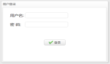
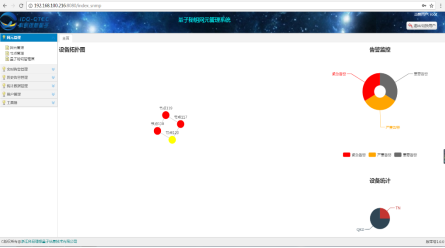
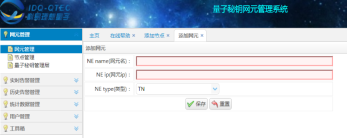
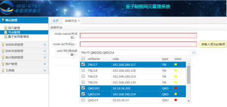
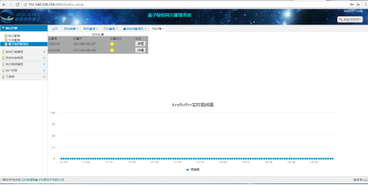
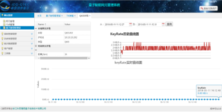
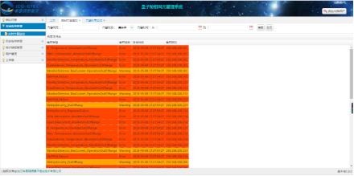
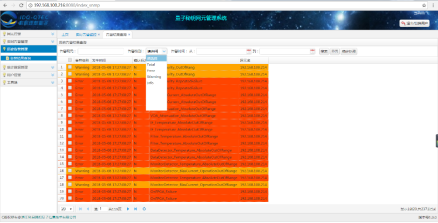
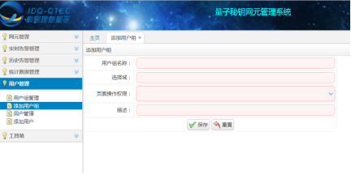
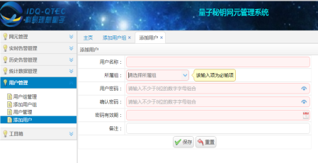

NMS User Guide
1）浏览器输入地址http://服务器ip:tomcat端口号
进入登录页面

2）输入管理员账号root 123123
进入首页

1）点击左侧菜单栏网元管理父菜单，再点击网元管理子菜单，首先添加网元，把需要配置的网元全部添加进去（包括TNS , QKD），填好信息后，点击保存即添加成功

2）如果有添加错误，在网元管理界面勾选添加错误的选项，再点击编辑，即可进行修改；如果需要删除，勾选需要删除的选项后点击删除即可。
3）添加完所有的网元后，即可进行节点配置，点击网元管理父菜单底下的节点管理子菜单，即可进行添加，在选择添加设备栏里勾选该节点所需要添加的所有设备即可。

4）同网元删除修改操作一致，如有需要，在节点管理界面进行修改、删除操作。
1） 添加完所有网元和节点后，返回首页，即可看到节点的信息和连接图，点击 节点，即可查看当前节点的信息。
1）点击左侧菜单栏网元管理父菜单底下的量子秘钥管理层，即可进行TNS层界面，点击页上所要查看的TNS点，即可进入TN详情页。页面上会看到当前TN底下的所有QKD和KeyBuffer实时曲线图。

1) 进入TN详情页后，如需查看QKD的信息，在上图QKD列表后有详情选项，点击进入以后，即可进入QKD详情页。其中左上角显示的是当前QKD详情和对端QKD详情以及距离，下方显示的是当前QKD的KeyRate实时曲线图，在右上方选择好时间段后，点击查询，即可显示KeyRate历史折线图。

1) 选择左侧菜单栏，点击实时告警管理，再点击实时告警监控，即可监控实时告警信息，如有需要，在实时告警监控页面上方可以根据告警网元，告警级别，告警时间，填好相关条件后，点击查询即可进行过滤查询。

2) 选择左侧菜单栏，点击历史告警管理，再点击告警结果查询，即可查看历史告警信息，再底部选择页数和页面大小即可进行分页查询。如需进行条件查询，操作同实时告警条件查询一致。

1）添加用户组，点击菜单栏左侧用户管理父菜单底下的添加用户组菜单即可进入添加用户组页面，填好相关信息后点击保存，即可添加成功。

2）添加用户，点击菜单栏左侧用户管理父菜单下的添加用户子菜单即可进入添加用户界面，填好相关信息后点击保存，即可添加成功。
